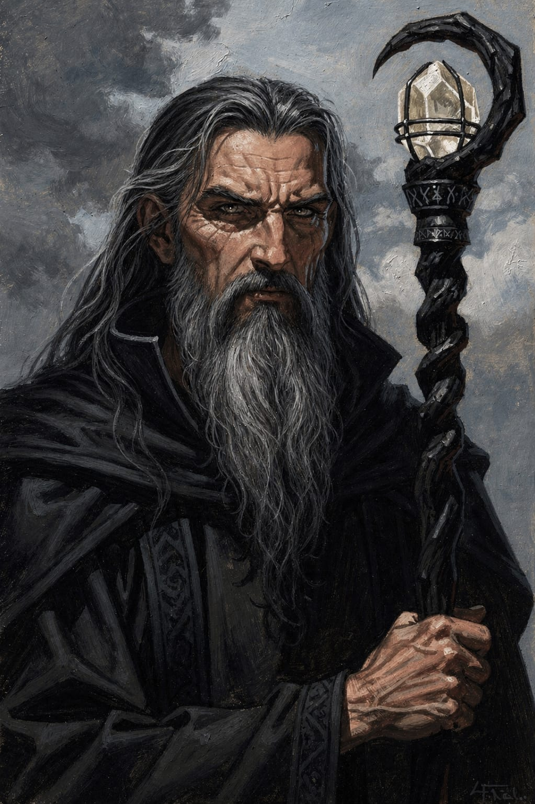

Thorgun
Matheus
Bem-vindo à
Você ouve passos na estrada. Uma luz fraca pisca lá adiante.
Uma taberna lendária nos confins do mundo
Alguns dizem que a Estrada para os Céus fica no caminho do céu.
Outros juram que é o desvio.

Amplo e de pé-direito alto, o salão é sustentado por vigas antigas e robustas. No centro, um balcão circular elevado se impõe, apoiado por pilastras grossas. Delas pendem barris presos por correntes, vertendo líquidos densos por torneiras de metal gasto.
O ar é pesado: gordura quente, pão rústico, couro úmido e ervas queimadas se misturam em um aroma que parece antigo demais para ser apenas cheiro. Mesas de troncos maciços e bancos rangentes completam o ambiente. A luz vem de velas baixas — insuficiente, deixando sombras maiores do que deveriam ser.
Duas escadarias simétricas se curvam pelos lados do salão, levando ao andar superior. Os degraus, gastos pelo tempo, revelam o peso de incontáveis passagens.
No alto, uma galeria contorna todo o espaço. Suas balaustradas exibem padrões estranhos — geométricos demais para simples ornamento — que parecem se mover conforme a luz oscila.
Abaixo do salão, o teto é baixo e arqueado, sustentado por pedra antiga. Tonéis alinham-se em ordem quase ritualística.
Entre eles, ânforas parcialmente enterradas guardam líquidos raros: algumas seladas com cera escura, outras cobertas apenas por panos grossos. Nem tudo ali é servido a qualquer visitante.
Nos fundos, além de um corredor afastado do salão, uma porta pesada leva ao açougue. O calor ali não acolhe — ele se impõe.
Ganchos de ferro sustentam carcaças inteiras e cortes em preparo. Cordas, lâminas e serras revelam uso constante. Uma fornalha baixa mantém o ambiente denso, enquanto a fumaça se arrasta pelas paredes, impregnando tudo ao redor.
★ Mais Escolhido
Conforto
Luxo
Arcano
Matheus

Pablo

Lincoln

Bruno